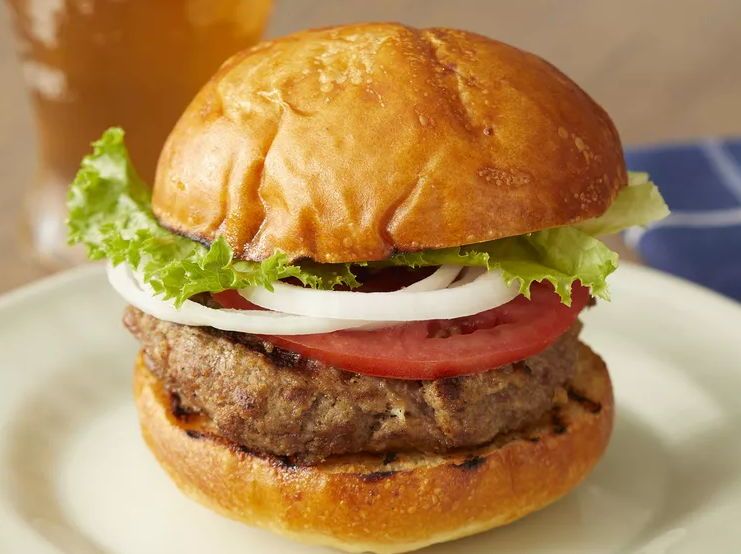

Classic Burger Recipe
A classic American burger recipe. Keeping it simple, keeping it delicious.

Ingredients
- Buns
- Meat patty of your choice, preferably beef
- Lettuce
- Tomato
- Optional: Sauce (Mayo/BBQ/Tomato)
Steps
-
Cook your beef patty to a nice medium rare (or whatever patty you
choose)
-
Let your meat rest, and toast your buns in the juice leftover from the
meat
-
Once rested for an appropriate amount of time, assemble your burger -
lettuce as the base is superior as it prevents the bun from sogging.
- Eat!
Return to the home page here!